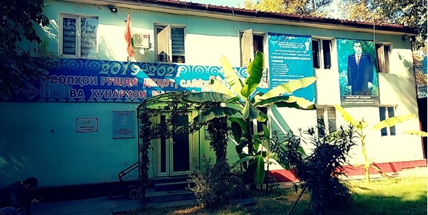

Ҳ И С О Б О Т
 Дар бораи ҷамъбасти фаъолияти Корхонаи воҳиди давлатии «Маркази ҷумҳуриявии тибби халқӣ» дар 9-моҳи соли 2022 ва иҷрои вазифаҳо то охири соли равон. Корхонаи воҳиди давлатии «Маркази ҷумҳуриявии тибби халқӣ»-и Вазорати тандурустӣ ва ҳифзи иҷтимоии аҳолии Ҷумҳурии Тоҷикистон барои дастгириҳои доимии соҳаи тибби халқӣ миннатдории худро баён мекунад. Марказ дар иҷрои “Нақшаи чорабиниҳо”-и Корхонаи воҳиди давлатии «Маркази ҷумҳуриявии тибби халқӣ» дар 9-моҳи соли 2022,барои сазовор пешвоз гирифтани 31-ӯмин солгарди ҷашни Истиқлолиятӣ давлатии Ҷумҳурии Тоҷикистон дар фазои сулҳу оромӣ ва суботи комили сиёсӣ қарор дошта,бахшида ба Иди касбии табибони Тоҷикистон, ки ҳамасола дар рӯзи зодрӯзи файласуф, олим ва табиби ҳозиқ Абӯалӣ ибни Сино таҷлил карда мешавад, барои муваффақияту комёбӣ ва дастовардҳои нав саъю кӯшиш бахарҷ дода истода, фаъолияти худро бароиамалисозии қарорҳои Ҳукумати Ҷумҳурии Тоҷикистон, талаботҳои қарорҳои ҳайати мушовара ва фармоишҳои Вазорати тандурустии Ҷумҳурии Тоҷикистон, баёния ба самти фаъолияти худ дар корхона, аз рӯи Оинномаи «Маркази ҷумҳуриявии тибби халқӣ» ва дигар санадҳои меъёрӣ ва хуқуқии соҳаи тандурустиро ба роҳбарӣ гирифта, мутобиқи Паёмҳои Асосгузори сулҳу ваҳдати миллӣ-Пешвои миллат, Президенти Ҷумҳурии Тоҷикистон муҳтарам Эмомалӣ Раҳмон ба Маҷлиси Олии Ҷумҳурии Тоҷикистон тибқи имкониятҳои мавҷуда, оиди рушди соҳаи тибби халқӣ равона карда, дар амал татбиқ намуда истодааст.
Дастури Вазорати тандурустӣва ҳифзи ичтимоии ахолии Чумӽурии Тоҷикистоноиди хамкорӣ намудан бо Донишгохи тибби анъанавии Чиндуи, Чумхурии Мардумии Чин,дар доираи ваколатхои худ, тибки Оинномаи КВД «МЧТХ» амал намуда, бо риояи тартибу талаботхои амалкунанда барои хамкори намудан бо донишгохи болобаён ва дар ин раванд чихати ба расмият даровардани хуччатхои алокаманд, чорахои зарури андешидаистодааст. Ташрифи Вазири тандурусти ба КВД “Маркази љумњуриявии тибби халќи”, суњбат бо кормандони